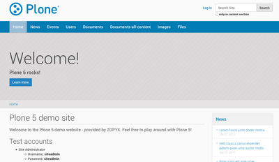

Try Plone
These online demo sites allow you to see the look and feel of Plone for yourself and check out its features and ease of use. You can log in with a variety of roles (users, editors, and administrators) and see how Plone presents each type of user with a unique, permissions-aware user interface.
If you'd like more information about Plone or to get your own tailored demonstration of Plone, any of these Plone providers will be pleased to help you.
If you're interested in installing Plone yourself, please see further below.
 http://demo.plone.org
http://demo.plone.org
Maintained by: The Plone Community
Plone version: 5.2 (Python 3.8)
Installed Add-ons: plone.restapi, support for multilingual, placeful workflow, working copy
Languages: English, German, Spanish, Basque
http://www.plone-demo.info
Maintained by: ZOPYX
Plone version: 5.1.2.1
Installed Add-ons: PloneFormGen
 http://plone5demo.quintagroup.com/
http://plone5demo.quintagroup.com/
Maintained by: Quintagroup
Plone version: 5.0
Installed Add-ons: Sunrain theme, easy forms, support for multilingual, placeful workflow, OpenID authentication, working copy, collective.embedly embedded videos, images and other rich media
 http://plone-demo.quintagroup.com
http://plone-demo.quintagroup.com
Maintained by: Quintagroup
Plone version: 4.3
Installed Add-ons: Carousel, ContentWellPortlets, PloneFormGen, collective.embedly, quintagroup.substyle, lots of themes to try out
Installing Plone
You can try a simple "cloud deployment" of Plone for free with a Heroku account:

If you're a tinkerer and would like to try downloading and installing Plone yourself, you can do so in a number of ways:
- use our Windows buildout
- use our universal installer (works on UNIX-based platforms, including Mac OS, Linux, BSD)
- use our VirtualBox/Vagrant virtual machine (works on any machine supporting VirtualBox and Vagrant, including Windows and MacOS)
To find these, please visit our official installation page [plone.org].
Test the nightly builds:
Plone 5.2 coredev nightly build on Python 3.8